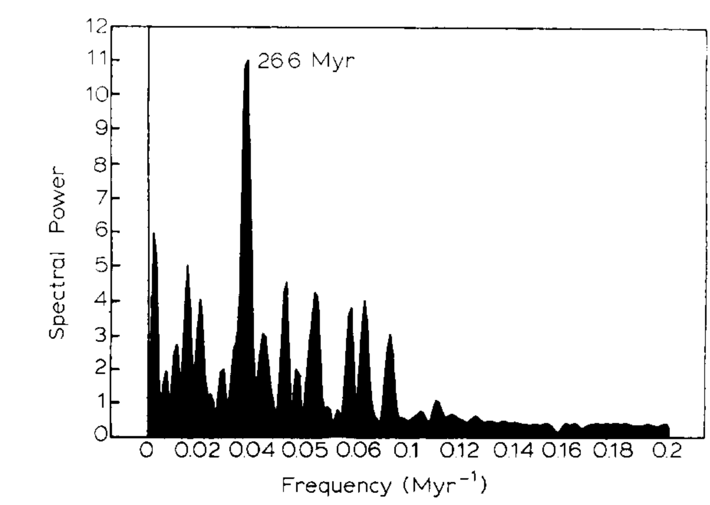

Major episodes of geologic change — correlations, time structure and possible causes
Key finding. Published records of major geologic events over the past roughly 250 million years show a statistically significant periodic component with an underlying periodicity formally equal to 26.6 million years and a recent maximum close to the present; a periodicity of around 30 million years is robust to probable errors in dating.

What question did this research address?
Major geologic events — mass extinctions, sea-level lows, continental flood-basalt eruptions, mountain building, abrupt changes in sea-floor spreading, ocean-anoxic and black-shale events, the largest evaporite deposits — have each been catalogued separately.
This paper asked whether they are independent. Synthesised into a single record with estimated dating errors, do they show time structure, and if so what could produce it?
What did we find?
The analysis synthesises several independently compiled event catalogues, carrying estimated dating errors through so the significance of any detected period can be assessed against those errors rather than assumed.
The detected periodicity is formally 26.6 million years, and remains robust at approximately 30 million years once probable dating errors are allowed for. The cycle need not be strictly periodic to produce this signal.
The different event types appear to be connected rather than coincident. Intervals of change involve jumps in sea-floor spreading associated with episodic continental rifting, volcanism, enhanced orogeny, global sea-level change, and climate fluctuation together.
Two classes of cause remain open. The period may reflect a purely internal Earth pulsation; alternatively, evidence of planetesimal impacts at several extinction boundaries and a possible 28 to 36 million year cycle in crater ages suggests energetic impacts may be affecting global tectonics.
Why does it matter?
Claims of periodicity in the geologic record are easy to make and hard to substantiate, because the record is irregularly sampled and imprecisely dated. Propagating dating errors through the analysis is what separates a testable claim from pattern-matching.
If the correlation between event types is real, then extinctions, volcanism, and sea-level change are expressions of a single underlying process rather than a series of unrelated accidents — which is a substantially stronger claim than periodicity alone.
Citation, data, and code
Michael R. Rampino and Ken Caldeira (1993). Major episodes of geologic change — correlations, time structure and possible causes. Earth and Planetary Science Letters 114, 215-227.